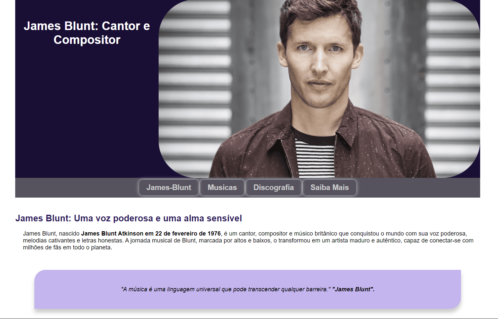

FD
Contato
Projetos
Formações
Cursos
Sobre mim
Nome: Francisco Douglas
Idade: 29
Formado: Gestão Financeira
Cursando: Engenharia da Computação
Telegram
Linkdin
GitHub
Linguagens de Programação
Projetos Front-End

-----